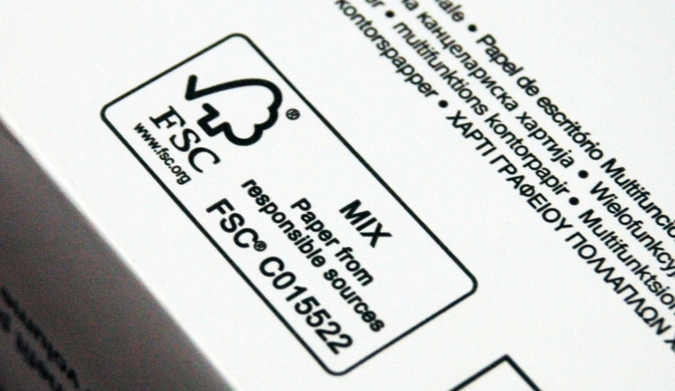

Paper & Printing
Use of FSC-certified paper has exploded over the past few years, nearly becoming an industry standard. With group certification readily available for printers, the costs for achieving FSC certification have been greatly reduced. In addition, FSC-certified paper is now available in all US markets.
In order to use the FSC logo on printed documents, the document must have flowed through the FSC Chain of Custody from the FSC-certified forest, to a paper manufacturer, merchant, and finally to a printer that has FSC Chain-of-Custody certification.

I am a printer...
All printers that want to use the FSC trademarks on printed document or make any FSC claims need to be CoC-certified. To learn more about certification, please visit our certification page. If you are a printer and have not yet updated your profile, go to FSC Marketplace and register today.
I want to use the FSC trademarks on a printed document...
If you are not a printer, but you want to demonstrate that the paper is FSC-certified by including the FSC trademarks on the document, you need to either have the document printed by a CoC-certified printer or get CoC-certified. For a list of existing FSC-certified printers, or to find FSC-certified paper, click the links to the right. To learn more about certification, please visit our certification page. If you are CoC-certified and want to use the logo on a promotional piece, go here.
I want to find FSC-certified paper...
There are a number of different FSC-certified papers on the market. To find FSC-certified papers or printers, please see the documents on the right.